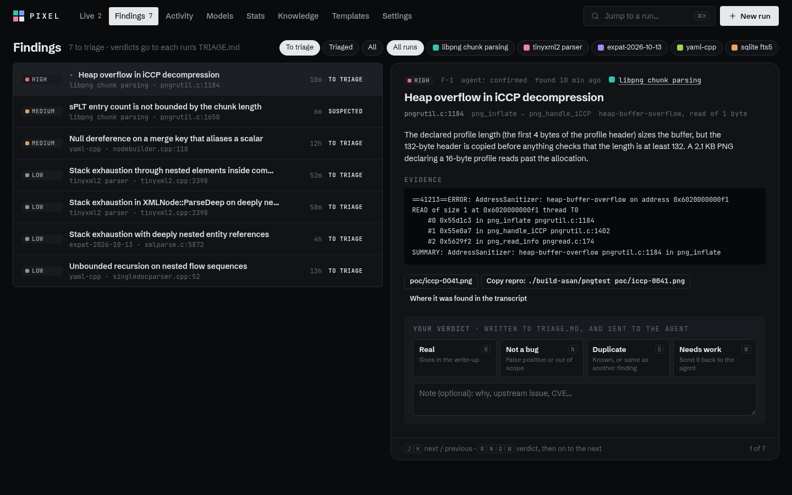

All three keep the Wall you liked and fix what made it hard to use. They share the same fake runs with tool calls streaming in, and everything in them is clickable: answering, messaging, pausing, renaming, triage, ⌘K and the keyboard.
2026-10-14 · plain HTML/CSS/JS in ai/mockups/r6/ · dark by default, light from the switcher at the bottom
The wall is home. Open a run and the wall shrinks into a live rail on the left while the run takes the rest of the screen, so you never lose sight of the others. Esc goes back.
Best if you mostly watch and dig into one run at a time. Closest to what you liked.
The same wall, with what changed since you last looked on top and a reply box on every tile. A run opens as a side panel that pushes the wall over. Findings gets its own page: every finding from every run, one key per verdict.
Best if you check in a few times a day and the findings are what you care about.
Made to stay open on a second monitor. Each live run is a big tile with what every agent runs now, the latest PROGRESS.md lines, 30 minutes of swimlanes and a reply box. Enter zooms a run in place; the rest keep streaming at the side.
Best if Pixel lives on its own screen. Could also be a "room" mode inside D or E.
D with a run open: the rail keeps every run live, the run gets the rest.

E's findings page: severity, evidence, PoC and repro, then R / N / D / W and on to the next.
What Pixel is used for
Job
How often
What it needs
Where it is now
Glance
many times a day · 2 s
Calm when things are fine, obvious when they aren't.
Status word and flags on each tile; colour only for waiting, recovering and failed.
Catch up
once or twice a day · 30 s
What changed per run while you were away, findings first.
E: list on top of the wall. D: "since you looked" button. All: dots on runs whose PROGRESS.md changed.
Step in
a few times a day · 10 s
Answer, message, retry or resume without leaving the overview.
Answers and Retry on the tile, 1–3 to answer, m to message, reply box on tiles in E and F.
Dig in
daily · minutes
Transcript, files, terminal for one run while the others stay visible.
D dock, E side panel, F zoom. Same run view in all three.
Triage
after each run
Go through findings one by one with the evidence in front of you. This is the output of the whole tool.
Findings tab in every run; E adds a page across all runs.
Start a run
rare
The form, with sensible defaults.
Unchanged (New run, n, ⌘K).
What made the Wall hard to use
Problems
The run opened as a sheet over the wall, so reading one run hid all the others.
The tile log mixed every agent, faded older lines and cut names to "differ…". You couldn't tell what each agent was doing.
Nothing told you a run was going wrong: PROGRESS.md gone quiet, context filling up, continues used up.
Findings only existed as text in PROGRESS.md and REPORT.md, and triage was one verdict for a whole run.
The throughput band took the best spot on the page, and you can't act on it.
Coloured top borders on rounded cards, light grey everywhere.
Fixes, in all three
Runs open beside the wall (dock, panel or zoom) and the other runs keep updating.
One line per agent: ├─ Fuzz iCCP bash ./fuzz/run.sh … 9s, with how long the step has run.
Flags appear only when true: quiet PROGRESS.md, context over 55 %, 2 of 3 continues, OOM restarts.
Findings are their own items with severity, file:line, evidence, PoC, repro and a verdict each.
Fleet numbers in one line with a text sparkline.
No coloured borders. State shows in the status word and in the tinted panel for a question, a recovery or a failure. Tiles keep their place (by start time) so you learn where each run is.
Research, and what came of it
R1
"Waiting on you" is the state that matters
Claude Code's agent view puts every session in one table, surfaces the ones waiting for input, and lets you peek and reply without opening a session (space to peek, a number key to answer a multiple-choice question).
Findings and their triage are a first-class part of the UI; catch-up supports checking in a few times a day.
R4
Control rooms go grey and keep colour for trouble
The ISA-101 high-performance HMI approach uses grey for normal operation and saves bright colour for abnormal conditions, because colour on normal things trains operators to ignore it.
A verdict per finding: real, not a bug, duplicate, needs work. Pixel points out likely duplicates (same file and frame). "Needs work" goes back to the agent if the run is still live.
R7
Keep the list in view when you watch several things
List-detail layouts keep the list visible beside the selected item so people can scan and compare; modal sheets are for focused, self-contained tasks.
The round-5 sheet is gone. D docks, E pushes, F zooms in place; the selected run stays marked in the list.
R8
Agent tools are converging on "agents are the main surface"
Cursor 3 added an Agents window for runs across machines, Warp lists every agent with its status in one panel, and Conductor shows parallel agents with review built in.
Findings as rows. Pixel reads the bullets under "Found / confirmed" (confirmed) and "Promising" (suspected) in PROGRESS.md and the numbered sections of REPORT.md, and keeps a stable id per finding. Severity and file:line are easiest if your template asks for one line per finding in a fixed shape:
A verdict per finding. A new table; TRIAGE.md is written from it; optionally the verdict and your note go to the live agent.
Since you last looked. Per browser, like the PROGRESS.md "seen" marker today, or per login if you want it to follow you to your phone.
Health flags. Everything is already in the database: progress_at, context, continues, OOM restarts.
The rest is frontend. Same data and API as today.
Your call
Pick D, E or F, or mix them. Mixes that fit together well: D's dock with E's findings page and catch-up, or D/E in the browser with F as a full-screen "room" mode.
Also: is a fixed one-line finding format in your template OK? It's what makes severity and file:line reliable.